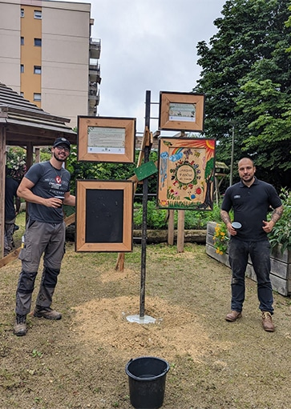
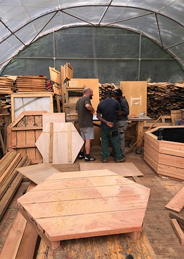
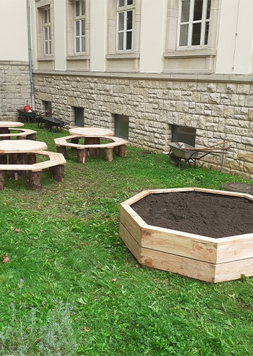
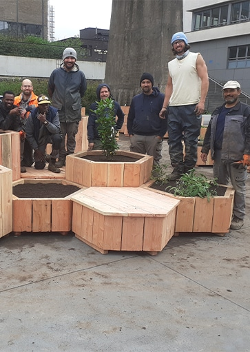
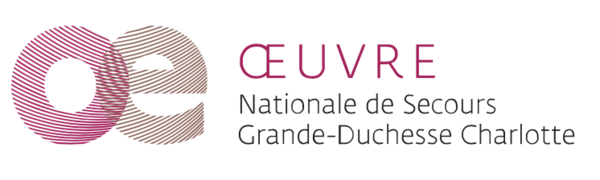
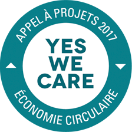

Dans le cadre de l'appel à projets YES WE CARE 2017 visant à stimuler la transition et la créativité vers l'économie circulaire, l'Œuvre Nationale de Secours Grande-Duchesse Charlotte a sélectionné le projet Réc'Up du CIGL Esch.
Le projet Réc'Up consiste à récupérer et utiliser de matériaux considérés comme “déchets” et leur donner une “seconde vie” en considérant ceux-ci comme la matière première pour des créations originales. Ce projet/service est adressé aux associations, institutions, personnes privées. Ce type d'activité permet aussi la création de liens sociaux entre les différents publics (entreprises, personnes en insertion, personnes privées…).
Découvrez nos réalisations Rec'Up
Vous êtes à la recherche de créations uniques et durables pour votre intérieur ou votre jardin ? Ne cherchez pas plus loin ! Notre catalogue Rec'Up regorge de merveilles conçues à partir de matériaux recyclés. De l'ameublement à la décoration, chaque pièce est fabriquée avec soin et passion par notre équipe dédiée.
Pour découvrir notre gamme complète de produits Rec'Up, [cliquez ici pour télécharger notre catalogue].
Commandez vos créations Rec'Up
Vous avez repéré une ou plusieurs créations qui vous plaisent dans notre catalogue ? N'hésitez pas à contacter Mathieu pour passer votre commande. Il sera ravi de vous aider et de répondre à toutes vos questions concernant nos produits.
Pour contacter Mathieu, vous pouvez lui envoyer un e-mail à mathieu.tassin@ciglesch.lu ou le joindre par téléphone au +352 54 42 45 506.
Visitez notre exposition au SIVEC
Nous avons le plaisir de collaborer avec le SIVEC pour présenter nos réalisations Rec'Up. Vous pouvez visiter notre exposition permanente sur le site du SIVEC.
L'aménagement d'un espace de stockage et de travail est envisagé sur le site du Escher Geméisguart. Nous avons la possibilité de récupérer un Hangar (ce qui resterait dans la logique du projet) et de l'installer sur site. En effet, un espace est disponible (non adapté pour les cultures, manque de luminosité) et permettrait une intégration idéale dans le site et la végétation existante. L'espace disponible est en contrebas et le hangar serait très peu visible. De plus, une végétalisation supplémentaire est prévue (lierre, parthénocissus, fallopia, chèvrefeuille…).


Bilan 2019 (fichier pdf)